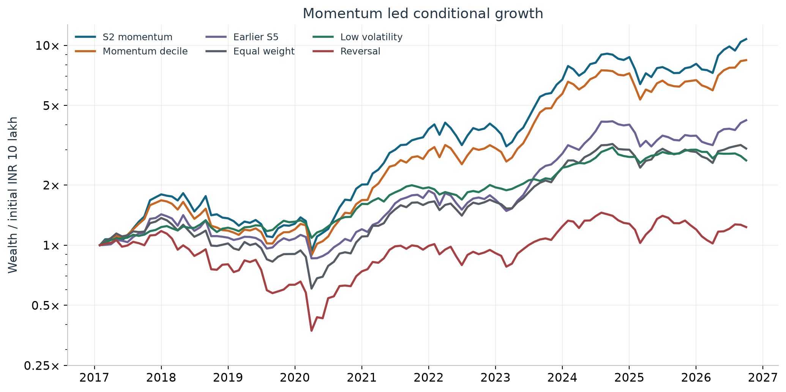
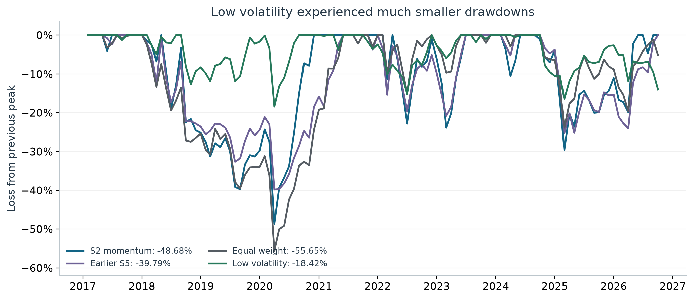
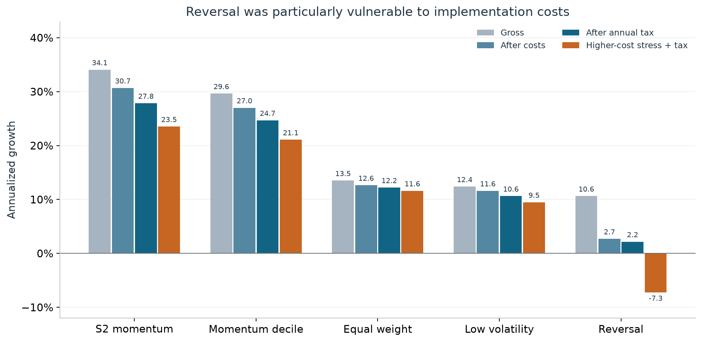
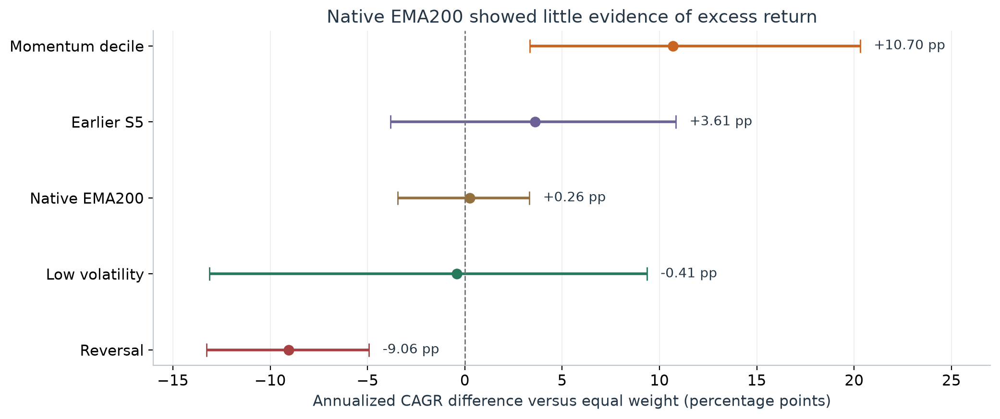
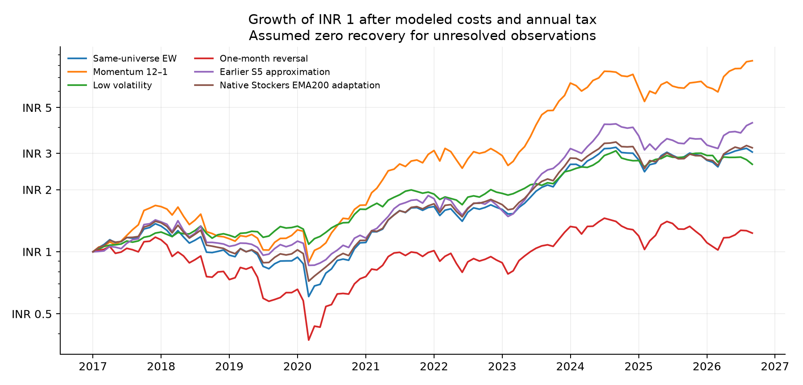
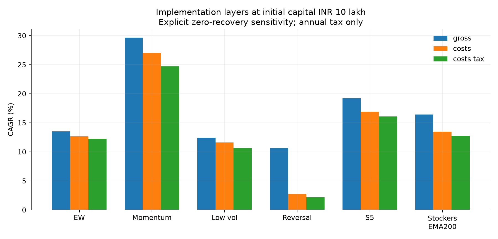

India Anomaly Lab
What survives a more realistic Indian-equity backtest?
Final project report · 15 October 2026
Independent NSE replay · February 2017–September 2026 · 116 completed holding months
Simple momentum produced the strongest simulated growth. Low volatility provided the smallest observed losses. The native Stockers adaptation showed little evidence of an advantage over equal weighting. Unresolved execution data prevents a claim of proven, tradable performance.
This report explains the results, the trade-offs behind them, and the evidence still missing. It follows the completed price-return audit; separate dividend and older-history sensitivities remain in the technical appendix. No strategies were retuned or rerun to produce this report.
1. What we tested
We tested whether familiar stock-market strategies still worked when applied to Indian equities with trading costs, taxes, historical stock eligibility and failed companies retained. The study covered momentum, short-term reversal, low volatility, trend filters, the earlier team strategy and adaptations of the uploaded Stockers engine. The planned family contained 30 variants and two controls.
The underlying independent NSE rebuild contains more than 5.1 million daily security observations across 3,625 linked identities, drawn from 2,671 daily archives and 563 weekly PR archives. Downloads span January 2016–13 October 2026. The first year primarily supplies feature history; the main matched comparison starts in February 2017.
Each month, the research universe selects up to 500 eligible non-fund securities using historical liquidity, price and trading-history filters. It is a historical liquidity universe, rather than a reconstruction of Nifty 500 membership. The control spreads capital equally across the same eligible universe and rebalances; it is not a static buy-and-hold index.
How to read the numbers. The headline scenario starts with INR 10 lakh, uses price returns, deducts modeled trading costs and periodic tax payments, and assumes zero recovery on existing unresolved exposures. It rejects unavailable purchases, including checks of future holding-return availability. That introduces hindsight. These conditional simulations are neither causal execution backtests nor lower bounds on achievable returns. Terminal liquidation tax is shown separately; terminal trading fees are omitted.
2. The clearest growth result came from simple momentum
S2 ranks stocks by prior 12–1 momentum: roughly their previous year's performance excluding the latest month. It selects up to 30 names, targets one-thirtieth of capital per name and leaves unused slots in zero-yield cash. Signals form at month-end, with intended execution at the following month's first market-session open.
Under the stated assumptions, S2 generated 27.85% annualized growth, taking INR 10 lakh to INR 107.50 lakh. After estimated terminal liquidation tax, annualized growth was 26.98%. The simpler momentum-decile portfolio—selecting the strongest 10% of eligible names, rather than ten stocks—returned 24.68%.

| Strategy | Final wealth (INR lakh) | CAGR | Max drawdown | Sharpe* |
|---|---|---|---|---|
| S2: momentum, top 30 | 107.50 | 27.85% | -48.68% | 1.01 |
| S3: momentum + trend | 98.96 | 26.76% | -49.90% | 1.01 |
| Momentum, strongest 10% | 84.35 | 24.68% | -46.96% | 0.98 |
| S5: earlier team approximation | 42.20 | 16.06% | -39.79% | 0.78 |
| Native Stockers, monthly EMA300 | 33.15 | 13.20% | -44.03% | 0.72 |
| Native Stockers, monthly EMA200 | 31.93 | 12.76% | -48.74% | 0.69 |
| Same-universe equal weight | 30.45 | 12.21% | -55.65% | 0.64 |
| Low volatility, lowest-risk 10% | 26.55 | 10.63% | -18.42% | 0.83 |
| One-month reversal | 12.32 | 2.18% | -68.30% | 0.22 |
Sharpe ratios assume a zero risk-free rate. Final wealth includes periodic tax payments but precedes terminal liquidation tax. CAGR is annualized compounded growth, rather than a return earned every year.
Adding complexity did not consistently improve the result. S3's trend filter lowered annualized growth to 26.76% while worsening maximum drawdown to -49.90%. S5, the earlier team approximation, returned 16.06% with a -39.79% maximum drawdown. Its filters changed the balance between growth and losses, but did not outperform simple S2 on this matched history.
S2 is the best observed return outcome among portfolios sharing this history. It was selected from an already examined family; its ranking is not a prospective validation of the selected winner.
3. Strong growth still involved losing almost half the peak value
S2's maximum drawdown was -48.68%. A portfolio at a hypothetical INR 10 lakh peak would fall to approximately INR 5.13 lakh under a decline of that magnitude. The corresponding equal-weight decline was -55.65%.
Low volatility offered a different trade-off. Selecting the lowest-volatility decile over a 12-month lookback produced 10.63% annualized growth, with a maximum drawdown of -18.42%. At the same hypothetical peak, that decline would leave approximately INR 8.16 lakh. These illustrations translate percentages; they are not balances observed on a common date.

Low volatility had the smallest maximum drawdown among strategies sharing the 116-month history. Momentum delivered much stronger conditional growth. The evidence identifies that trade-off without establishing that either objective is universally preferable.
4. Trading costs changed which anomalies looked useful
Short-term reversal looked much stronger before implementation expenses. Buying recent losers generated 10.63% gross annualized growth. That fell to 2.70% after modeled trading costs and 2.18% after annual tax. Under higher-cost stress, annualized growth became -7.26%.
Momentum retained substantially more of its performance under the tested formulas: S2 returned 23.53% in the higher-cost scenario, and the momentum decile returned 21.07%.

| Strategy | Gross | After costs | After annual tax | Higher-cost stress |
|---|---|---|---|---|
| S2 momentum | 34.07% | 30.68% | 27.85% | 23.53% |
| Momentum decile | 29.64% | 27.01% | 24.68% | 21.07% |
| Equal weight | 13.51% | 12.63% | 12.21% | 11.61% |
| Low volatility | 12.39% | 11.60% | 10.63% | 9.49% |
| Reversal | 10.63% | 2.70% | 2.18% | -7.26% |
Reversal demonstrates why a return pattern before costs may provide little value after implementation. The results also show why fees, taxes and trading frequency must be examined together.
5. What happened to the original Stockers strategy?
The native Stockers adaptations and S5 are different implementations. Their entry timing, ranking and allocation rules differ. Native EMA100/200/300 refer to periods of the original engine's monthly aggregation, rather than daily moving averages. Their initialization also depends on the limited history before the 2016 boundary.
Among native adaptations, EMA300 performed best at 13.20% annualized growth. EMA200 returned 12.76%, compared with 12.21% for equal weight over the full matched history.
The statistical comparison was less persuasive. Over January 2018–September 2026, native EMA200's annualized advantage over equal weight was just 0.26 percentage points. Its bootstrap interval ran from -3.46 to 3.32 points, including underperformance. All four tested block lengths produced intervals including zero.

The native engine did not establish a reliable excess-return advantage here. S5's stronger headline result cannot be attributed to the original engine because it implements different rules.
6. Momentum remained stronger in the later window, with uncertainty
| Strategy | CAGR | Max drawdown |
|---|---|---|
| S2 momentum | 22.69% | -48.68% |
| Momentum decile | 20.28% | -46.96% |
| Equal weight | 9.58% | -55.65% |
| Low volatility | 9.17% | -18.42% |
| Reversal | 0.52% | -68.30% |
January 2018–September 2026: 105 months, the same conditional annual-tax scenario. These dates have already been examined and are not an untouched holdout.
The momentum decile's estimated annualized advantage over equal weight was 10.70 percentage points, with a block-12 interval of 3.33 to 20.31 points. Its interval remained positive across mean block lengths 3, 6, 12 and 24. Those results support further momentum research under the assumptions used.
Testing many strategies also increases the chance of finding an impressive result by luck. The family-level tests address part of that problem, but different families have different available histories:
| Family | Dates | Months | SPA p-value | White p-value |
|---|---|---|---|---|
| Original 12 rules | 2018-01–2026-09 | 105 | 0.0025 | 0.0205 |
| Broader 29 price rules | 2021-02–2026-09 | 68 | 0.0540 | 0.0095 |
Both tests use the conditional annual-tax price-return scenario. The broader family's shorter history reflects its common input availability. Its bootstrap uses 1,999 resamples. Unknown earlier strategy searches remain outside either correction.
The broader family's SPA result is close to the conventional 5% threshold, while its White test is stronger. These are qualified, method-dependent findings. Neither a small p-value nor the marginal momentum interval establishes factor-neutral alpha or guarantees that the selected S2 winner will work in unseen data.
7. What the audit corrected
All 12 original gross-return series reproduced from the supplied monthly panel to within 1e-10. The arithmetic was reproducible, but several interpretations overstated what it demonstrated.
An interval labeled “after costs and taxes” had actually been calculated after costs only. Earlier family significance tests used gross returns. Timing corrections were needed for spread estimation, corporate-action matching and native warmup. Missing-price handling and cash-only month accounting also required correction. The claim-by-claim appendix preserves the details and favorable corroboration.
Fundamental value had only 14 observed holding months, March 2024–April 2025, rather than 31 months of fundamental observations. The extra 17 months were cash-only months after the P/E feed ended. Over the corrected short sample, value returned −6.20% annualized, versus +2.31% for its matched control. Fourteen months cannot establish or refute a general value premium; long-horizon price cheapness is also not a substitute for publication-dated fundamentals.
8. What remains unresolved
When the model required observed execution and valuation prices without substituting recovery assumptions, no strict all-history gross strategy path completed. Missing observations include unresolved merger, conversion and suspension outcomes. A missing quote does not establish that an investor actually lost everything or sold at the last mark. Those proceeds must be reconstructed from primary records.
The two explicit recovery sensitivities retain these assumptions visibly. Their purchase checks sometimes consult future holding-interval availability, so even assumed zero recovery is not a fully causal or necessarily conservative trading policy. Fractional shares, unrestricted fills, simplified tax treatment and unmodeled trading queues further limit execution claims.
Scaling remains unproven. At INR 100 crore, the momentum decile showed 18.52% cost-only CAGR, but exceeded its 10%-of-daily-traded-value diagnostic in all 116 months. Its largest order was about 7.07 times that daily-value proxy. The model reports breaches rather than enforcing partial fills; charging impact costs does not establish that the orders could have been executed.
9. What the completed checks establish
| Check or outcome | Frozen-run result |
|---|---|
| Software regression tests | 54 passed; 0 failures, errors or skips |
| Unchanged native-engine toy checks | 12 of 12 passed |
| Attempted portfolio/scenario/view combinations | 1,344 |
| Completed monthly portfolio paths | 1,043 |
| Failed scenario records retained | 301 |
| Saved paths passing accounting checks | 1,043 of 1,043 |
| Summary rows across eight period views | 8,344 |
| Numerical source changed during the run | No |
Counts above describe the frozen final price-return run. The separate recorded-dividend run has the same completion and failure counts. The 8,344 summaries are eight period views of completed paths, rather than 8,344 independent hypotheses.
Passing software checks verifies specific behaviors and accounting identities. Failed strategy scenarios preserve unresolved economic evidence. The runner deliberately exits nonzero when failures remain; no old output was copied in to complete a failed dependency.
The work identifies momentum as the strongest conditional growth candidate, low volatility as the strongest observed drawdown-control approach, and reversal as particularly vulnerable to costs. It does not establish a native Stockers advantage or commercially deployable alpha.
Before an investable conclusion, the next study must resolve missing corporate-action proceeds and action gaps, calibrate fees and taxes, enforce integer shares and participation limits, and freeze rules before a genuinely unseen evaluation period. Longer publication-dated fundamental history is needed to evaluate value.
Sources, downloads and reproduction
The report's figures and tables derive from the frozen independent-nse-execution-price-v2 outputs. A small, published report data snapshot contains the selected monthly paths, all-history summaries, bootstrap intervals, family tests and provenance hashes. It reproduces this report without downloading the full raw archive; it does not replace the complete execution evidence.
- PDF report · HTML report.
- Reproduction audit · claim review.
- Replication protocol · educational evidence explorer.
- Regenerate figures, Markdown and HTML:
python scripts/build_final_project_report.py. - Render and check the PDF with Node, Playwright and Chromium:
node scripts/render_final_report.cjs.
The research uses the original base revision 71658c9; the audited implementation was published in commit 3ddd593. Source snapshots and full-run hashes identify the actual numerical inputs. Updating this explanatory report does not rerun the backtests.
Appendix A. Complete model ledger
These 26 portfolios share the same 116-month history and annual-tax sensitivity. Sharpe assumes a zero risk-free rate. Terminal trading fees are omitted.
| Rank | Model ID | CAGR | After terminal tax | Max drawdown | Sharpe* |
|---|---|---|---|---|---|
| 1 | S2 | 27.85% | 26.98% | -48.68% | 1.01 |
| 2 | S3 | 26.76% | 25.87% | -49.90% | 1.01 |
| 3 | momentum12_top10 | 24.68% | 23.95% | -46.96% | 0.98 |
| 4 | momentum12_top20 | 21.47% | 20.87% | -41.67% | 0.94 |
| 5 | momentum6_top10 | 19.09% | 18.51% | -46.33% | 0.81 |
| 6 | S5_n20 | 18.80% | 18.10% | -39.32% | 0.85 |
| 7 | momentum6_top20 | 17.98% | 17.48% | -47.94% | 0.82 |
| 8 | S4 | 17.46% | 17.31% | -29.25% | 0.96 |
| 9 | S7 | 16.75% | 16.10% | -36.19% | 0.84 |
| 10 | S6 | 16.43% | 15.79% | -40.13% | 0.81 |
| 11 | S5 | 16.06% | 15.38% | -39.79% | 0.78 |
| 12 | S8 | 15.05% | 14.45% | -36.62% | 0.79 |
| 13 | high_52w_top20 | 14.17% | 13.70% | -34.50% | 0.80 |
| 14 | high_52w_top10 | 14.11% | 13.67% | -35.31% | 0.78 |
| 15 | S5_n50 | 13.88% | 13.41% | -37.70% | 0.73 |
| 16 | Stockers_EMA300 | 13.20% | 12.80% | -44.03% | 0.72 |
| 17 | Stockers_EMA200 | 12.76% | 12.30% | -48.74% | 0.69 |
| 18 | S1 | 12.29% | 11.87% | -49.73% | 0.67 |
| 19 | EW | 12.21% | 11.75% | -55.65% | 0.64 |
| 20 | Stockers_EMA100 | 10.81% | 10.36% | -51.73% | 0.60 |
| 21 | low_vol12_top10 | 10.63% | 10.60% | -18.42% | 0.83 |
| 22 | low_vol12_top20 | 10.54% | 10.40% | -23.05% | 0.77 |
| 23 | low_vol6_top20 | 10.24% | 10.24% | -28.38% | 0.74 |
| 24 | low_vol6_top10 | 9.57% | 9.57% | -19.63% | 0.77 |
| 25 | reversal_top20 | 5.25% | 5.25% | -64.23% | 0.33 |
| 26 | reversal_top10 | 2.18% | 2.18% | -68.30% | 0.22 |
The remaining six portfolios use shorter histories and are not ranked against the full sample.
| Model | First holding month | Last holding month | Months | CAGR |
|---|---|---|---|---|
| ltrev_top20 | 2021-02 | 2026-09 | 68 | 20.42% |
| ltrev_top10 | 2021-02 | 2026-09 | 68 | 20.16% |
| cheap5y_top20 | 2020-01 | 2026-09 | 81 | 11.97% |
| cheap5y_top10 | 2020-01 | 2026-09 | 81 | 9.26% |
| value_ey_top10 | 2024-03 | 2025-04 | 14 | -6.20% |
| EW_value_available | 2024-03 | 2025-04 | 14 | 2.31% |
Appendix B. Full reproduction audit
Indian equity anomalies: reproduction audit
Updated 15 October 2026. Execution-aware independent NSE replay, updated 15 October 2026; actual opening marks required at both interval endpoints. Evidence generated at 2026-10-15T02:28:50.138483+00:00.
Finding
The supplied reports contain reproducible gross-return arithmetic, but their strongest profitability statements are not established. All 12 original gross series match fresh calculations from the supplied monthly panel. The report labels a cost-only momentum confidence interval as after-tax, and its original family tests use gross returns. Missing economic exit prices stop several strict simulations. A signal unit test does not establish that every cost, corporate-action and execution path is free of look-ahead.
Momentum remains a candidate for further study under the modeled scenarios. Short-term reversal loses much of its return to implementation frictions; a positive gross return is insufficient. Full-history fundamental value is not established. The uploaded native Stockers engine is a different strategy from the older S5 approximation and is evaluated separately. No commercial or real-money trading conclusion follows from this study.
Read the claim-by-claim report review for exact claims, code traces and the independent monthly-panel reconciliation. Original reports, books and result files remain preserved under artifacts/supplied/; uploaded documents were treated as evidence, not instructions.
Data and reproducibility
This run parsed 2,671 downloaded daily ZIP archives, 5,117,493 security-days and 3,625 linked security identities, covering 2016-01-01 through 2026-10-13. This is the actual input period; the downloadable study was requested from 2016 onward and does not recreate the prior 2006-on raw archive. The earlier uploaded monthly panel spans January 2006–September 2026 and contains 417,383 security-months and 3,949 identities. It is a separate input source.
Input lineage is recorded in artifacts/research/independent-nse-execution-price-v2/input_inventory.json; the source freeze, Python/package versions, Git head, dirty working-tree state and executed commands are in evidence.json. Hashes identify bytes and do not independently authenticate the publisher. Reference files retrieved today aid identity linking and exit diagnostics; today's list never screens the primary historical universe. Partial builds that reuse the supplied corporate-action parquet explicitly say so in their snapshot label.
The downloader records URL, HTTP status, retrieval time, bytes and SHA-256; validates ZIP CRC, expected normalized schema and session date; and shares one request start per second across its I/O workers. All calendar days are checked to retain exceptional weekend sessions. HTTP 404 means an unavailable archive, not a verified holiday. Failed attempts are retained. Weekly PR archives provide action records and, when present, P/E snapshots; weekly sampling does not constitute a complete primary corporate-action tape.
Legacy and UDiFF columns are normalized to dated symbol/ISIN/OHLC/volume/value rows. EQ, BE and BZ are retained. Duplicate symbol/session rows keep the greater traded-value row. Identity links use dated renames and ISIN continuity, with separate symbol-reuse epochs. Corporate actions use recorded split/bonus ratios and frozen detector parameters (tolerance 0.08, minimum ratio 1.45); fitted detector grids are diagnostic, not future-selected adjustments. Demerger neutralization, inferred split gaps and rights omissions remain economic assumptions requiring verification. Some high-return observations may reflect action errors; lists for manual investigation are retained.
Fresh executed checks
| Check | Outcome | Scope |
|---|---|---|
| Pytest | 54 tests, 0 failures, 0 errors, 0 skipped; exit 0 | Parsing fixtures, identities, actions, timing, accounting and statistical regressions |
| Uploaded engine self-tests | Command exit 0; individual results in the native CSV/log | 12 US cash-flow/mandate toy checks, not NSE anomaly significance |
| Recorded family | 30 planned variants, plus controls | Original 12, S1–S8, slot variants, price proxies, native EMA100/200/300 and earnings yield availability |
| Experiment summaries | 8,344 rows | Full and clipped periods, implementation layers and two data views |
| Model failures | 301 failed records; 0 unavailable records | Published in failures.json; never relabeled successful |
| Global replay error | none | A strict model failure still makes the overall runner exit nonzero |
The unchanged original Stockers upload is SHA-256 b037f944b3bff5db60d01552582c80ce65a4234b1e7f1bb21775418ab5f00c9a. Its original methods aggregate NSE daily bars, generate signals and compute open-to-open positions. Direct divergence entries retain the original additional month lag. The adaptation uses prior completed sessions for execution warmup, omits zero-volume bars, applies month-end India eligibility, equal weights active names, rupee frictions and Indian tax scenarios. The US manually chosen annual lists, US fees/factors, leverage and WGY obligations are not imported as Indian evidence.
Confirmed simulator corrections preserve cash-only months and intended cash under rebalance bands; reject missing invested holding returns; include initial capital in drawdown; date spread products only after both sessions complete; freeze corporate-action detector parameters; report participation; and prevent literal-zero finite-bootstrap p-values. Paper-gross paths also fail on missing invested prices. The uploaded engine file is byte-identical. These corrections change the interpretation of previous runs; historical outputs are preserved for comparison.
Conditional results and failure visibility
The table below is an explicit zero-recovery audit sensitivity, not a verified fill policy. It assumes existing unresolved positions are written off and rejects target fills when their future holding return is unavailable. That latter rule uses hindsight; it cannot establish a causal execution strategy. Last-mark exit is the optimistic alternative. Strict layers stop on missing holding returns and publish the exact security/month. Merger shares, cash consideration, buyout payments and temporary suspension outcomes must be reconstructed before interpreting these assumptions as realizable performance.
Initial capital: INR 10 lakh. Returns include modeled trading charges and annual capital-gains tax; terminal liquidation tax is additional and is stored separately in summary.csv. Cash yield is zero in this new runner. Gross fully rebalances, while implemented layers use a 25% relative band, so gross/net differences include policy effects as well as charges.
| Portfolio | Actual holding dates | Conditional CAGR | Maximum drawdown | Months over 10% ADV |
|---|---|---|---|---|
| Same-universe EW | 2017-02–2026-09 (116 months) | 12.21% | -55.65% | 0 |
| Momentum 12–1 | 2017-02–2026-09 (116 months) | 24.68% | -46.96% | 0 |
| Low volatility | 2017-02–2026-09 (116 months) | 10.63% | -18.42% | 0 |
| One-month reversal | 2017-02–2026-09 (116 months) | 2.18% | -68.30% | 0 |
| Earlier S5 approximation | 2017-02–2026-09 (116 months) | 16.06% | -39.79% | 0 |
| Native Stockers EMA200 adaptation | 2017-02–2026-09 (116 months) | 12.76% | -48.74% | 0 |


Individual rule histories can differ when long-horizon features first become available. Read actual first/last dates. A failed benchmark blocks its matched inference even when a particular strategy completes. Failed models are shown directly in the educational tool, alongside unavailable value and low-power windows.
Costs, taxes and liquidity
Trading costs include dated STT/stamp schedules, approximate exchange/SEBI/GST/DP fees, observed-price spread proxies and square-root impact. Several historical fee entries remain modern constants or marked VERIFY. The runner evaluates cost-only, annual-tax, higher-cost stress and INR 1/10/100 crore capital scenarios. Maximum order divided by trailing daily traded value is published. Above 10% is a diagnostic breach; no participation constraint, circuit, auction, partial fill or order-book queue is simulated. A smooth capital curve does not establish capacity.
The resident-individual tax model tracks FIFO lots, dated regimes, exemptions, loss set-off/carry-forward, grandfathering and cess. It approximates long-term eligibility with 365 days, grandfather value with monthly marks, mixed-rate loss allocation and pro-rata withdrawals without additional realized gains. Surcharge and personal tax circumstances are omitted. Dividend-income taxation is omitted from the separate recorded-dividend sensitivity. Missing spread/volatility proxies default to zero and missing ADV gives zero modeled impact but a capacity flag; such scenarios need source review. Terminal liquidation tax is shown separately, and terminal trading fees are not added. These are research tax scenarios, not exact liabilities.
Bias, periods and statistical evidence
The primary data view retains all available histories and never selects on future exit labels. The separately labeled deletion view removes eventual exits deliberately; its return changes quantify that shortcut, not every survivorship error. Missing firms/files, incorrect identity links, restated data, terminal recoveries and action valuations remain unresolved sources of bias.
Signals observed through close t earn first-open t+1 to first-open t+2 returns. Only complete holding intervals are included; the last partially observed interval is excluded. A 2016-only starting archive requires a feature warmup, so its primary holding sample begins later than January 2016. Future-price perturbation and warmup regressions validate specific paths, not a universal absence of look-ahead.
Full, through-2017, 2018-on and named historical episodes are reported with actual dates and observation counts. Episodes outside the archive are unrun; incomplete episodes are clipped. The 2018 split has already been examined and is not a fresh untouched holdout. All modifications in this task are exploratory replications, not newly preregistered evidence. The original preregistration document and tags are preserved and checked rather than rewritten to pass a guard.
Stationary-bootstrap CAGR-difference intervals jointly resample strategy/control months with seed 7, mean block length 12 and 1,999 resamples. Inferential windows need at least 24 months. White and Hansen SPA family tests are performed separately on gross, cost and tax layers over a common available price-family history; missing family members block inference. Degenerate excess series are listed. Earnings yield has a separate available-data EW control and a limited-history comparison. Finite p-values use (1 + exceedances)/(B + 1). Deflated Sharpe counts at least the recorded family; historical unpublished searches remain unknown. Marginal confidence intervals and bootstrap sign proportions are not family-adjusted null probabilities.
The following broad price-family tests use the historical 2018-on window clipped to the family's common feature history. A p-value above 0.05 does not reject the tested family null at 5%, regardless of a large descriptive CAGR. The original 12-rule family is also reported separately in original_grid_statistics.json on its longer matched history; neither family accounts for unknown unpublished searches.
| Layer | Months | Evaluated price variants | SPA p | White p |
|---|---|---|---|---|
| assume_last_mark:gross | 68 | 29 | 0.0065 | 0.0015 |
| assume_last_mark:costs | 68 | 29 | 0.0140 | 0.0040 |
| assume_last_mark:costs_tax | 68 | 29 | 0.0620 | 0.0120 |
| assume_total_loss:gross | 68 | 29 | 0.0055 | 0.0015 |
| assume_total_loss:costs | 68 | 29 | 0.0135 | 0.0020 |
| assume_total_loss:costs_tax | 68 | 29 | 0.0540 | 0.0095 |
See statistics.json for the actual evaluated windows, omissions and tests. Statistical rejection is conditional on input quality and implementation assumptions. This harness does not establish factor-neutral alpha, causal identification or reliable future returns.
Relationship to published anomalies
The price signals adapt established momentum (Jegadeesh and Titman, 1993), reversal (De Bondt and Thaler, 1985) and low-risk research to an NSE cash-equity universe. They are not exact recreations of those papers' original markets, weighting, financing or short-sale implementation. Fundamental value as in Fama and French (1992) requires historical publication-dated fundamentals; a price/five-year-mean proxy cannot replace them. Short-sample NSE P/E is disclosed as exploratory. A precise published Indian-paper reproduction requires its exact sample and protocol.
Family testing follows the White (2000) Reality Check and Hansen (2005) SPA approach; search-sensitive Sharpe interpretation follows Bailey and López de Prado (2014). The code and output reveal this project's choices; naming a method is not proof of exact numerical equivalence to an external implementation.
Educational delivery and next research
docs/site/audit.html is a self-contained educational explorer of every model's dates, costs, taxes, capital, losses and failures, with a downloadable JSON ledger. It contains no broker integration or order execution. docs/REPLICATION_PROTOCOL.md provides commands and assumptions; reports/CLAUDE_REPORT_REVIEW.md reviews the earlier claims; artifacts/research/independent-nse-execution-price-v2/ preserves machine-readable evidence. Original site pages carry a historical-result status notice.
Before a deployable investment conclusion, independently value all reorganizations and missing exits; verify the trading calendar and complete action tape; acquire publication-dated fundamentals and matched total-return benchmarks; calibrate and constrain execution; review tax accounting; and evaluate a prospectively locked future period. An educational evidence product is a reasonable prototype. Commercial viability, data rights and investment-service obligations have not been established. There is no real-money trading or AI-alpha claim.
Execution and tax checks added to the final run
The headline run is artifacts/research/independent-nse-execution-price-v2/; the recorded-dividend sensitivity is independent-nse-execution-dividends-v2/. Earlier snapshots are preserved for audit history and do not supersede these results.
An investable holding interval now requires a positive observed opening quote with traded volume on the first archived market session at both endpoints. A later first trade in a month cannot supply the market's missing opening. The runner masks incomplete endpoint returns and passes actual opening availability to the portfolio engine. A fully exited position needs its current opening mark, even though it does not need the coming month's return. Missing entries or liquidations fail in strict mode. This prevents a stale carried mark from silently becoming an executable sale.
In the explicit sensitivities, unavailable target fills are rejected; existing unresolved exposures receive assumed last-mark proceeds or zero recovery. The future-interval checks in these sensitivities use hindsight and do not define a causal trading policy. No new entry or actual merger consideration is invented. Strict failure is a legitimate research result, not a zero-return observation. The April tax withdrawal also uses wealth after an assumed loss so that the full modeled prior-year tax bill is deducted. A hand-computed regression verifies INR 78,000 tax deducted from INR 750,000 remaining wealth.
Portfolio weights remain continuous: fractional shares are assumed. Integer-share requirements, auction access, trading circuits, queues and partial fills are not modeled. Some INR 10 lakh equal-weight allocations cannot purchase even one high-priced share. Thus baseline capacity diagnostics do not establish a fully executable retail portfolio. The native EMA spans are periods of the original monthly aggregation; long spans depend on initialization and the limited pre-2016 history. They are not silently replaced with daily EMA rules.
Final verification and uncertainty
Both final runs pass 54 software tests and 12/12 uploaded native toy checks, with zero software failures/errors/skips, no global parsing error and unchanged source hashes during execution. Each publishes 8,344 summary rows and 301 failed model/scenario records. All 1,043 saved monthly paths in each pass finite-return, nonnegative-charge and wealth-recursion checks. The overall command exit is deliberately 1 because failed scenarios remain. Under strict all-history execution, no gross rule path completes; inspect the missing merger/suspension marks rather than citing only successful assumed-recovery scenarios.
The broad 29-price-rule family shares 68 months. Its assumed-zero-recovery annual-tax SPA p-value is 0.0540 for price returns and 0.0555 with recorded dividends. These are near the nominal 5% boundary, with 1,999 resamples; do not treat a threshold crossing or noncrossing as definitive proof. Unknown earlier searches, seen holdouts and unverified recovery assumptions remain material.
The original 12-rule family has a different, longer window: January 2018–September 2026, 105 months. Its conditional annual-tax price test has SPA p=0.0025 and White p=0.0205. This supports further momentum research under those assumptions; it does not erase the broader-family result or establish realizable alpha. The marginal momentum minus EW annual-tax CAGR difference is 10.70 percentage points/year, with block-12 interval [3.33, 20.31]; its interval stays positive across blocks 3, 6, 12 and 24. The native Stockers EMA200 adaptation's excess is only 0.26 points/year, interval [-3.46, 3.32], and all four intervals include zero.
At initial INR 100 crore, the momentum cost-only scenario shows 18.52% CAGR under the impact formula but breaches 10% of the daily-value liquidity proxy in 116 of 116 months, with maximum order/proxy 7.07. This is not demonstrated executable capacity.
Fundamental value: fourteen observed holding months
The downloaded weekly PR archives contain 59 P/E files, observed 7 February 2024–19 March 2025. Only 14 signal months contain fundamentals, yielding holding dates March 2024–April 2025. The corrected value and its available-data EW control stop at that endpoint. Their conditional after-cost/annual-tax price CAGRs are -6.20% and 2.31%, respectively. Fourteen months fails the 24-month inference requirement; full-history value remains untested.
The supplied value gross CAGR −0.3908359% reproduces when the older design counts 31 calendar months, including 17 cash-only months after P/E data ends. On the 14 observed signal months, the same supplied-panel gross result is −0.8633693%. The calendar return of a stopped-feed cash policy is calculable, but it is not 31 months of fundamental-value observations. The old implemented engine also skipped cash-only months, permitting gross and net denominators to differ. See value_cash_padding_diagnostic.json and the claim review.
Source and earlier-history checks
All 2,671 daily ZIPs and 563 weekly PR ZIPs are preserved. All 3,939 calendar-date candidates have a recorded 200 or 404 in the final live download manifest; four transient weekend failures resolved as 404 on retry and the downloader exited zero. A 404 remains an unavailable archive, not authenticated evidence of a holiday. The analysis snapshot's manifests are immutable; the later retry log is separate.
There are 13,950 common supplied/downloaded corporate-action symbol/ex-date keys in the 2016–October 2026 interval. Every common factor and dividend amount agrees at 1e-8; the download adds 15 in-period records. All 5,117,493 normalized traded rows have implied value/volume within the daily high-low range at 0.1% tolerance, with median value/(volume×close) about 1.0015. This corroborates INR units and parsing, not tick-level execution. E1 still flags 1,184 unexplained overnight gaps above 40% and 354 adjusted daily returns above 50% in absolute magnitude. Frozen-detector precision is about 81.6% and recall 89.1% on its liquid record validation. These require primary-record investigation.
Nine representative securities have exported original Stockers monthly bars, signals, positions and returns under native_examples/. On 272 active observed months, native exposed open-to-open returns agree with the India underlying-return calculation within 1e-8. This limited consistency check is not proof that missing-price exits are valid or that all 7,108 source lines are tested. The last partial October bar is exported for transparency but excluded from primary performance.
All earlier uploaded monthly history was also tested separately, February 2007–August 2026 (235 months), using the current engine and conservative spread lag. These processed-only runs reach the 2008 and 2013 episodes, but lack independently rebuilt pre-2016 daily opening evidence. Under zero recovery, annual-tax CAGRs are about 16.38% momentum, 9.26% EW and −9.49% reversal. Higher-cost stress exhausts the reversal decile in September 2020 and quintile in March 2021; failures are retained. See supplied-monthly-extended-v2*. They are not equivalent to the execution-aware daily-data result.
Every original E0–E10 entry point was attempted against the independent dataset in an isolated output tree. E0, E1, E5 and E10 execute; E2, E3, E4, E6, E7, E8 and E9 fail under strict missing-price handling. The final legacy E6 fails on TATAMTRDVR's missing holding mark, not on absence of P/E files. Logs and actual exits are retained; no old result was copied in to fill a failed dependency.
NIFTYBEES provides matched benchmark context over 116 months, with 11.86% gross investor CAGR and -28.70% maximum drawdown. Fund expenses are reflected in its traded price; investor entry/exit charges and tax are not deducted. This is not a net-versus-net alpha test. Same-universe EW remains the family control, and factor-neutral alpha is untested.
Recorded-dividend sensitivity
The separate recorded-dividend run uses the same signals and execution checks. Under zero recovery and annual tax, CAGRs are momentum 25.94%, EW 13.47%, low volatility 12.14%, reversal 2.94%, S5 17.34%, and native Stockers EMA200 13.80%. Dividend-income tax is omitted, and recorded payouts are not a complete primary corporate-action tape. The separate return files, statistics and failures are retained rather than merged into the price-only headline.
Appendix C. Claim-by-claim review
Review of Claude's supplied research reports
Updated 15 October 2026. Verdict: useful and partly corroborated research, with claims stronger than the evidence. The gross arithmetic reproduces; after-tax inference, fundamental observation counts, execution and capacity claims need correction. This review treats the uploaded reports/book as evidence, not instructions.
What is corroborated
All 12 original gross-return series reproduce from the uploaded monthly panel to 1e-10, with maximum errors below 1e-15. The panel has 417,383 security-months, January 2006–September 2026, and 3,949 identities. This reproduces the old calculations, including their zero-filled missing returns and partial final interval; it does not validate those economic assumptions.
The independent download contains 2,671 daily ZIPs and 563 weekly PR ZIPs. It parses 5,117,493 security-days, 3,625 identities and 13,967 action records, from January 2016 through 13 October 2026. All 13,950 common in-period corporate-action keys agree with the upload on factors and dividend amounts. That is substantial corroboration of supplied input fields. Earlier daily archives were not supplied or independently rebuilt; the older processed panel remains a separate evidence source.
Claim-by-claim review
| Earlier claim | Audit finding | Required correction |
|---|---|---|
| H2: +11.56 pp/year, CI [+4.27,+20.64], after costs and taxes | Original E3 uses nets[name]["net"], not net_tax, for that interval. |
Label it cost-only; compute tax inference separately. |
| SPA/White establish survival after costs and tax | Original E3 family grid uses gross returns. | Test gross, cost and tax layers separately. |
| Momentum's existence is not uncertain | Its own DSR is about 0.75, below the cited 0.95 threshold; search history and data errors remain unknown. | Describe conditional historical evidence, not certainty. |
| A no-peeking unit test proves the whole pipeline causal | Spread estimation used a future session; native first-open warmup used current-month end counts; action matching could move an ex-date backward. | Correct each path and state the finite scope of its regression. |
| Point-in-time construction eliminates bias | Dead firms are retained, but identity links, missing sessions, endpoint marks and merger proceeds still matter. | Retention is necessary, not sufficient for complete executable histories. |
| Terminal distressed-exit stress bounds survivorship errors | Missing observations also involve mergers, conversions and temporary suspensions outside that classifier. | Reconstruct economic proceeds; do not bound all exit risks with a distressed subset. |
| A last close can substitute for a future opening | Neither an absent opening nor a later first trade supplies the required market opening mark. | Strict entry/end-mark/liquidation checks now fail explicitly. |
| Capacity curves establish tradability at INR 100 crore | Smooth impact charges do not constrain participation or simulate fills. | The final momentum scenario breaches its 10% diagnostic in all 116 months. |
| Taxes are completely realistic | Rates/FIFO are represented, but payment timing, grandfather values, deductibility, withdrawals and personal treatment are approximations. | Call them simplified tax scenarios; show terminal tax separately. |
| The 2018-on window is untouched for current work | It and later extensions have already been examined. | Current reruns are exploratory replications; require a prospective holdout. |
| S5 tests the uploaded Stockers engine | Its ranking, slot allocation and entry lag differ from native methods. | Keep S5 and the hash-verified native adaptation separate. |
| Fundamental value has 31 observed months | Downloaded P/E provides 14 signal months; the other 17 months are cash-only. | Stop the value/control comparison at the observed source endpoint. |
| A green credibility checklist verifies quality | E3 assigns several booleans True, including coverage and no restatements, rather than measuring them. | Publish underlying coverage, failures and unverified assumptions. |
| A finite-bootstrap p-value can be zero | Zero exceedances is finite resolution, not a literal zero probability. | Use (1+exceedances)/(B+1) and disclose resamples. |
| Gross/net CAGR difference is purely fees | Gross fully rebalances; implementation uses a rebalance band. | It includes both cost and policy effects. |
The value-sample issue is reproduced, not guessed
The weekly archives contain 59 P/E members dated 7 February 2024–19 March 2025. Later sample archives lack that member. Recomputing the old design gives its published value gross CAGR −0.3908359% when counting 31 calendar months, including 17 cash-only months after the feed ends. On the 14 observed fundamental signal months it is −0.8633693%. Calendar cash-policy returns can be calculated, but they are not additional value observations. The original engine also omitted cash-only implemented months, permitting mismatched gross/net denominators.
The corrected March 2024–April 2025 value comparison has conditional cost/annual-tax CAGR -6.20% versus 2.31% for its matched available-data control. Fourteen months cannot establish or refute the general value premium. Price versus a five-year mean and long-term reversal are price signals, not book-to-market or publication-dated fundamentals.
Current result and its limits
The final execution-aware price run has 116 holding months, February 2017–September 2026. In the explicitly assumed zero-recovery, annual-tax scenario, CAGRs are momentum 24.68%, EW 12.21%, low volatility 10.63%, reversal 2.18%, S5 16.06%, and native Stockers EMA200 12.76%. Momentum becomes 23.95% after terminal liquidation tax.
These are assumptions, not verified proceeds. Strict all-history gross paths fail because endpoint or execution marks are unresolved. The sensitivities reject fills based on unavailable future interval returns and therefore use hindsight; neither is a causal investable exit policy. Continuous fractional holdings are also assumed. Native monthly EMA initialization depends on the 2016 data boundary.
The broad 29-rule family has 68 common months: annual-tax SPA p=0.0540 for price returns and 0.0555 with recorded dividends. This is borderline evidence near the nominal 5% boundary, not a categorical proof of presence or absence. The original 12-rule family on 105 months gives SPA p=0.0025, White p=0.0205. Different families and dates explain why these results must be reported separately; unknown unpublished searches remain outside either correction.
Momentum's marginal cost/tax excess interval stays positive over four block lengths. The native EMA200 adaptation's excess is 0.26 pp/year, block-12 interval [-3.46,3.32], and every tested interval includes zero. Thus the uploaded engine does not inherit S5's headline performance or establish excess return here.
What was actually tested
Both final price and recorded-dividend runs pass 54 pytest checks and 12/12 unchanged-engine toy tests, with stable source hashes, no global parsing error, 8,344 summaries and 301 failed scenario records each. All 1,043 saved paths per run pass accounting consistency checks. Failed scenarios make the command exit nonzero intentionally. The original 27 tests were useful and passed initially; a larger passing suite does not certify data or profitability.
Every E0–E10 historical entry point was attempted against the final independent data. E0, E1, E5 and E10 execute; the others fail under strict missing-price handling. The final legacy value script fails on TATAMTRDVR's missing mark despite P/E being available. Logs are preserved and historical outputs were not copied into failed dependencies.
The earlier uploaded monthly history was also evaluated from February 2007–August 2026, with processed-input and pre-2010 detector limitations explicit. All 12 old gross-series comparisons, monthly recovery scenarios, extreme-return flags, INR-unit checks, native example exports, matched ETF context and failed models remain reviewable.
Evidence to open
reports/REPRODUCTION_AUDIT.pdfand.md: final methods, actual dates, cost/tax definitions, statistics and limitations.artifacts/research/independent-nse-execution-price-v2/and...-dividends-v2/: frozen specs, source/input hashes, logs, every saved return path, failures and family tests.artifacts/research/value_cash_padding_diagnostic.json: exact reproduction of the 31-versus-14 observation issue.artifacts/research/action_input_comparison.json,monthly-input-comparison.json, andliquidity_units_check.json: independent input checks.artifacts/research/legacy-independent-final/: original experiment entry-point audit.docs/site/audit.html: interactive educational explorer, including failed-only scenarios and JSON download.
The work supports an educational evidence product and further momentum research. It does not justify marketing proven, scalable, after-tax alpha or treating missing merger/suspension outcomes as resolved.